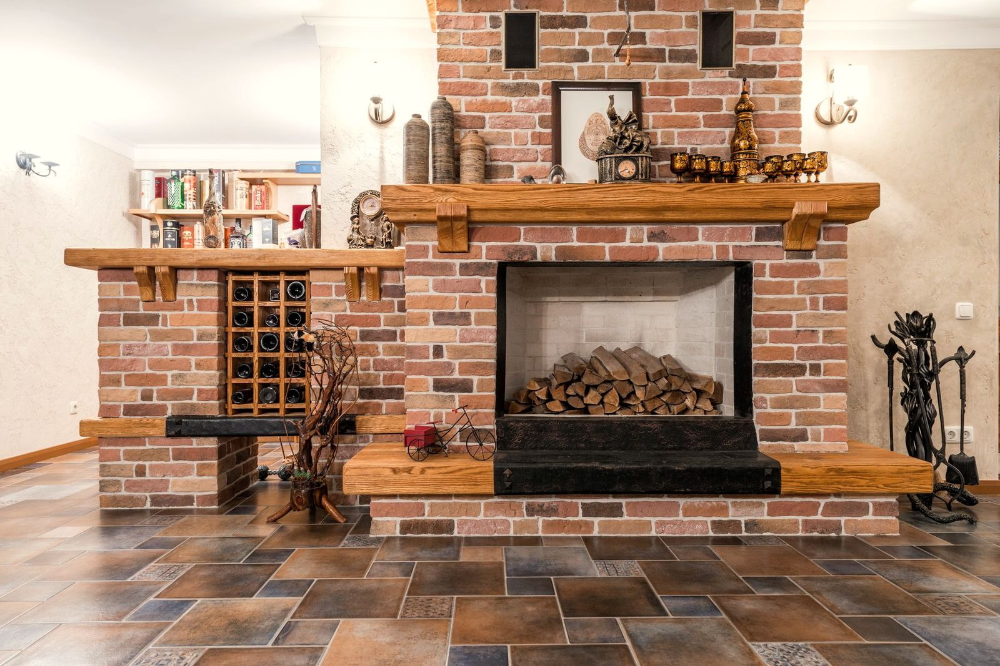
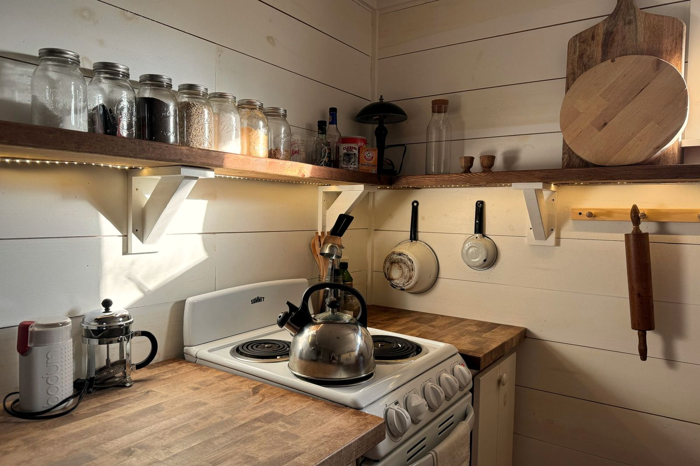
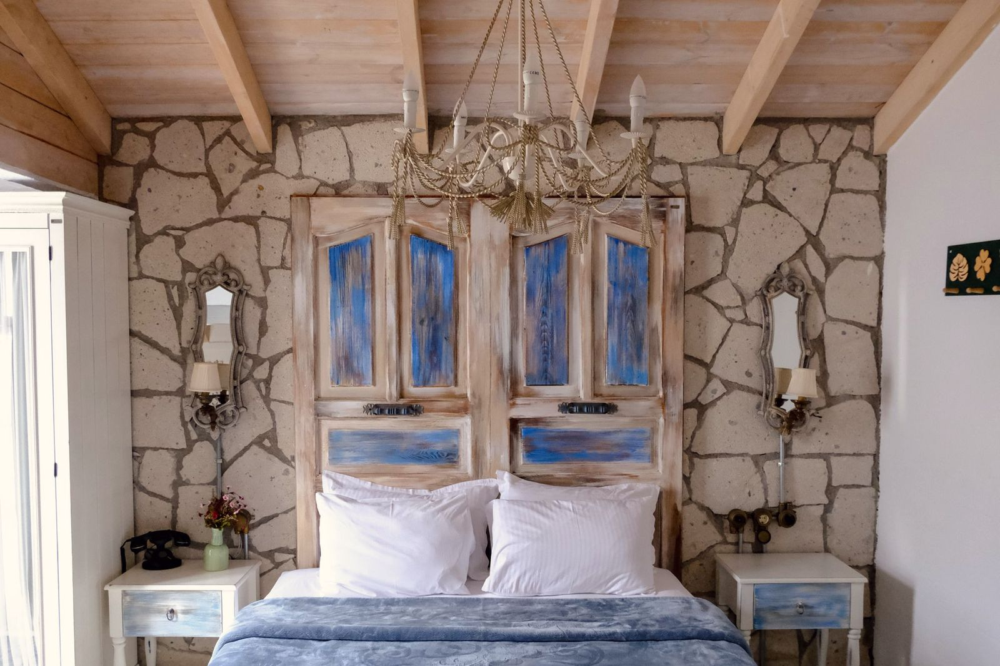
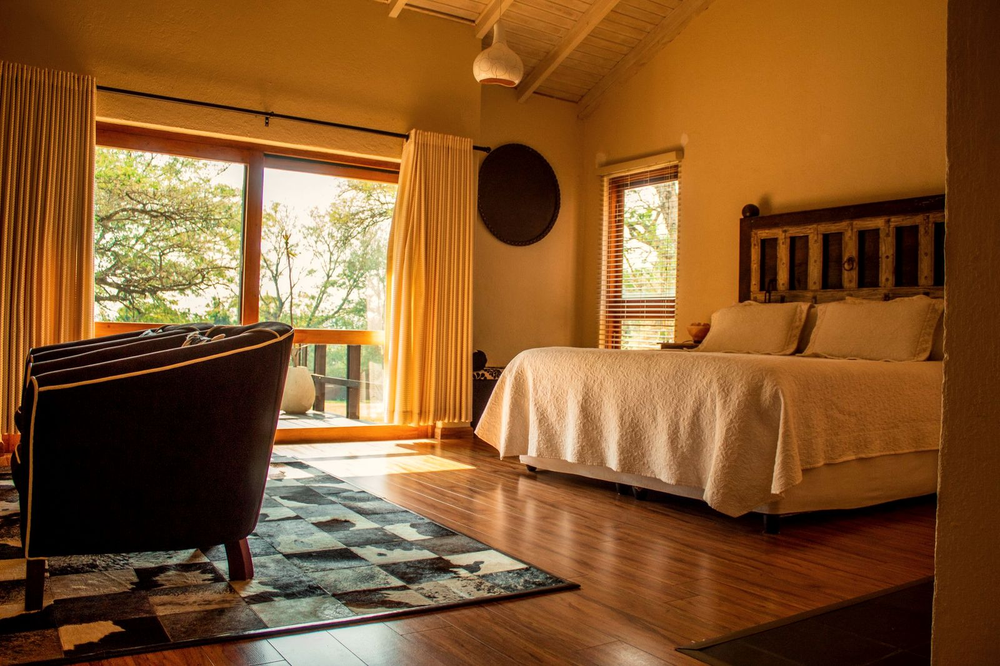
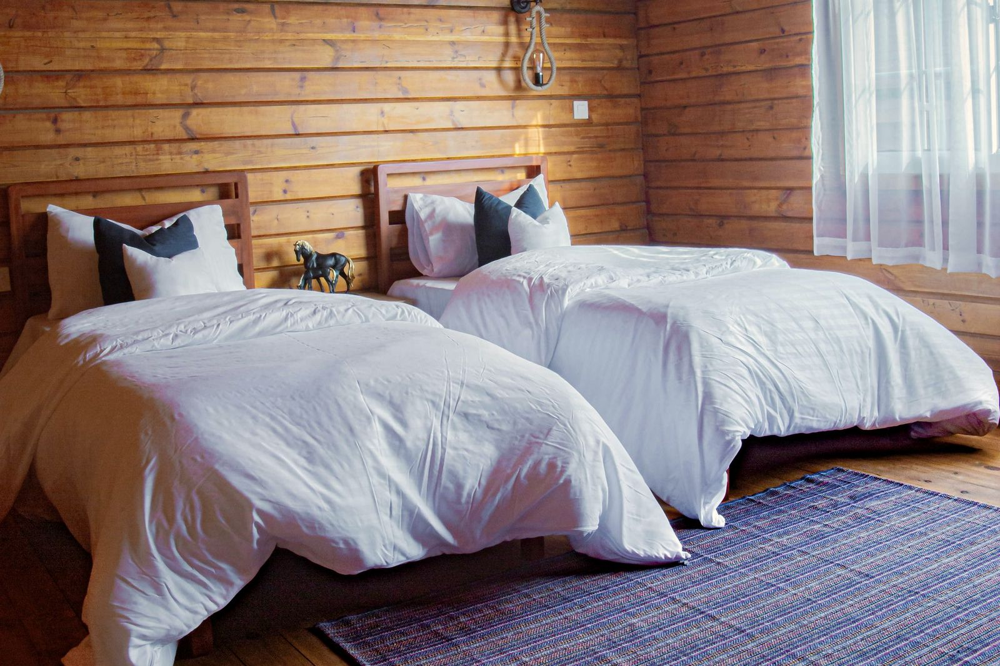
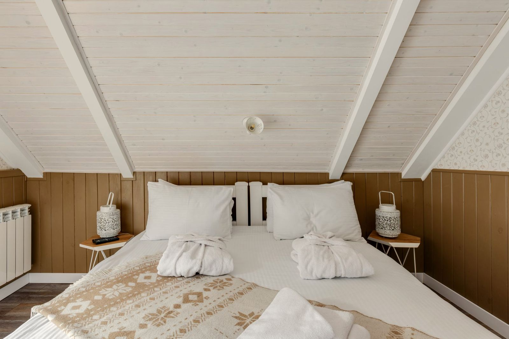
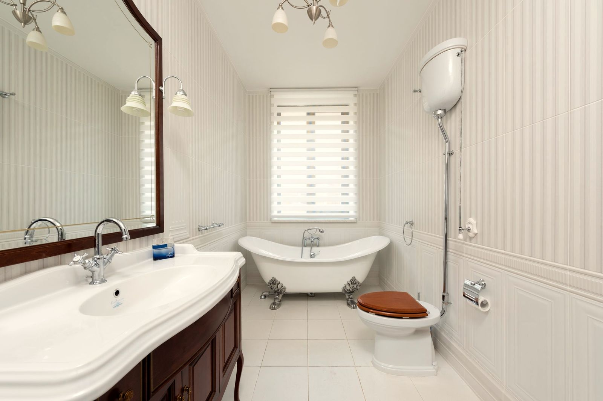

Zona común · planta alta
Salón de la lareira
La lareira, con la leña de castaño ya cortada, se enciende de octubre a mayo. Alrededor, la mesa larga, los libros de la casa y sitio para los ocho.

Sober · Ribeira Sacra · cañón del Sil
Una casa de piedra entre las viñas de la orilla norte del Sil. Para ocho, entera. Se llega por el río.
El Sil corre encajado entre paredes de cuatrocientos metros.
En la orilla que mira al sol, los bancales de viña. Ahí está la casa.
01 Llegada
Se llega en coche hasta el portal, por la pista de los bancales. Desde el patio se ve el río abajo y la otra orilla enfrente.
02 La casa historia de ejemplo
La levantó una familia de viticultores con la piedra que salía al abrir los bancales: lousa parda para los muros, granito para las esquinas y los dinteles, pizarra para el tejado. Abajo, la bodega; arriba, la vivienda y el corredor de madera, al sol del mediodía.
Se restauró sin mover una piedra de sitio. Los muros miden sesenta centímetros: guardan el fresco en agosto y el calor de la lareira en enero.
03 Las estancias
Fotografías de ejemplo. Son de archivo (Pexels) y no retratan ninguna casa real; en la web de una casa de verdad van sus fotos.
Zona común · planta alta
La lareira, con la leña de castaño ya cortada, se enciende de octubre a mayo. Alrededor, la mesa larga, los libros de la casa y sitio para los ocho.

Zona común · planta baja
Cocina de casa grande, con encimera de madera, fogón, horno, lavavajillas y cafetera de émbolo. Da al patio y al emparrado.

Dormitorio doble · cama de 160
El dormitorio grande, con la pared de piedra vista y la ventana al sur: por la mañana se ve el río desde la cama.

Dormitorio doble · cama de 150
Techo de madera, suelo de tarima y un ventanal grande a los árboles. Es el más fresco en verano: da al castañar.

Dormitorio · dos camas de 90
Sale al corredor de madera. Dos camas que se pueden juntar y una mesa para escribir mirando a la otra orilla.

Bajo cubierta · cama de 150
El desván de la casa, bajo el tejado de pizarra: techo inclinado de madera y un ventanuco al este que coge el primer sol.

3 baños · uno con bañera
Uno en cada planta y otro dentro de O Bacelo; el de arriba, con bañera de patas. Toallas de algodón y agua caliente para todos a la vez.

04 El entorno
Brota la viña y el castañar se pone verde claro. Es la mejor época para andar los caminos de los bancales.
Mediodías a la sombra del emparrado, el Sil en catamarán y cenas en el corredor, que de noche refresca.
Vendimia a mano y en cesto por los bancales; la mencía se pone roja y en noviembre caen las castañas.
Niebla en el cañón por la mañana y la lareira por la tarde. Las cepas, podadas; el río, a la vista.
El color del valle y el recorrido del sol cambian con la estación que elijas.
Distancias por carretera desde el solar, calculadas con OpenStreetMap (OSRM).
05 Servicios y normas
06 Reservar
Se reserva la casa entera, de 2 noches en adelante.
982 00 00 00 reservas@ejemplo.com Lugar da Corga, 4 · 27460 Sober (Lugo)Al pulsar se carga Google Maps (puede usar cookies de Google). Ubicación de ejemplo: un bancal de Sober.
Demostración. Las fechas ocupadas son de ejemplo y no se envía ni se cobra nada.
Elige el día de llegada.
Supuestos de la demo: temporada alta en Semana Santa, del 1 de julio al 15 de septiembre y del 22 de diciembre al 6 de enero; mínimo de 2 noches; precios de ejemplo.
Versión
Color